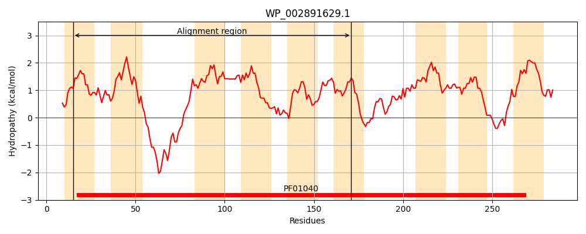
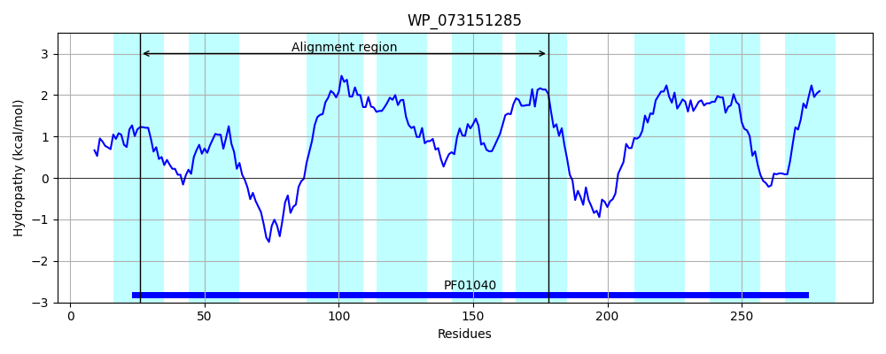
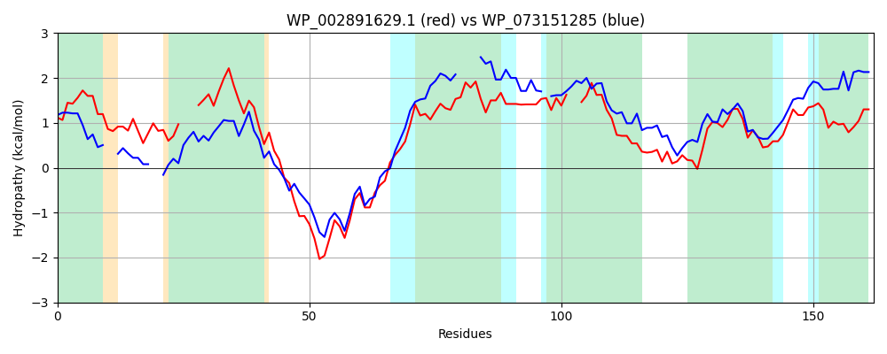

Hit Accession: WP_073151285
Hit TCID: 9.B.241.2.6
Hit Description: gnl|BL_ORD_ID|21404 gnl|TC-DB|WP_073151285.1|9.B.241.2.6 4-hydroxybenzoate octaprenyltransferase [Seinonella peptonophila]
Mach Len: 162
e:0.000000
Query TMS Count : 9
Hit TMS Count: 9
TMS-Overlap Score: 6.650000
Predicted Substrates:None
BLAST Alignment:
Score: 154 , Bit scores: 63 bits, E-value: 8.6e-12, Alignment length: 162, Percentage identity: 33
Query: 15 FGNLISVIGGFLLASKGHIDYPLFV---WTLLGVSLVVASGCVFNNYIDRDIDRKMERTKNRVLVKGLISPEASLVYATLLGIAGFMLLWFGANPLACWLGV--MGFVVYVGVYSLYMKRHSVYGTLIGSLSGAAPPVIGYCAVTGDFDSGAAILLAIFSLW 171
F L +++G L GH+ P +V W L + ++ N IDR ID K RT NR L GL+S + L F+LL+F A L WL V + V++ V+ Y KR + + +S AA P+ G+ A+TG D A IL +LW
Sbjct: 26 FAYLGAILGS--LEDTGHL--PTWVQMGWITLAMVGARSAAMALNRIIDRKIDAKNPRTSNRALPAGLLSETFVWGFVVL----SFVLLFFAALQLN-WLTVYLLPLAVFILVFYSYTKRFTWLCHFVLGISTAAGPLGGWIAITGRIDLTAIILFITVALW 178 | Protein Hydropathy Plots: |
|---|
|  |  |
Pairwise Alignment-Hydropathy Plot:
|
|---|
|  |